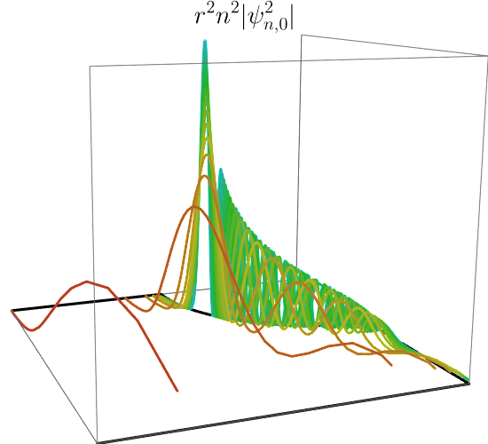

About Me:
I am an analyst specializing in microlocal analysis and singular geometry and their applications to partial differential equations and mathematical physics more broadly. Previously, I was a Szego Assistant Professor at Stanford University. Before that, I did my PhD at MIT, where I was fortunate to be advised by Peter Hintz.
Education:
Ph.D. in Pure Mathematics, MIT, 2023.
B.Sc. in Mathematics and Physics, Stanford University, 2018.
Works in progress:
-
Microlocal analysis of the nonrelativistic limit of the Klein--Gordon equation. (Joint with Andrew Hassell, Qiuye Jia, Andras Vasy.)
-
The asymptotic structure of forward scattering. (Joint with Nick Lohr, Izak Oltman, and Joey Zhou.)
-
Convergence of the Born series for Coulombic potentials on asymptotically conic manifolds. (Joint with Jared Wunsch.)
Titles tentative. Click
here for a live feed of me working on these manuscripts.
Teaching:
-
Stanford Math 173, Spring 2024: Theory of Partial Differential Equations
-
Stanford Math 21, Winter 2024: Calculus III
-
MIT 18.089, Summer 2021: Calculus for Naval Engineers.
A figure:

|
A statement:
I stand against antisemitism and other forms of fashionable prejudice. And for those suffering from internalized antisemitism:
a reminder. Bundism saved no one.
{kind=link}